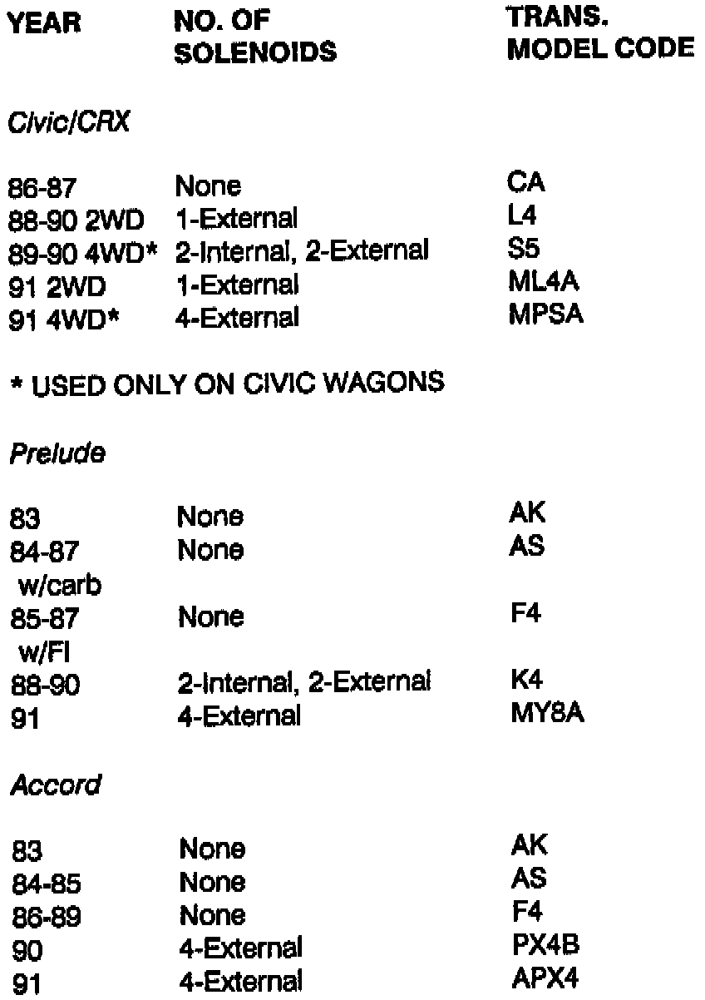
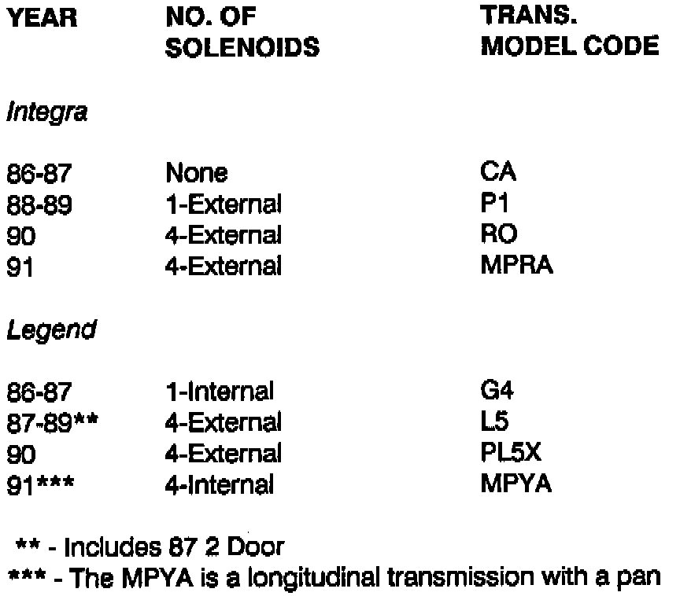

Operation CHARM
: Car repair manuals for everyone.
Home
>>
Acura
>>
1988
>>
Integra L4-1590cc 1.6L DOHC FI
>>
Repair and Diagnosis
>>
Technical Service Bulletins
>>
All Technical Service Bulletins
>>
A/T - 4 Speed Identification
A/T - 4 Speed Identification
BULLETIN: # 069B
SUBJECT: Trans I.D.
APPLICATION: Honda/Acura
DATE: September 1991
TRANSMISSION: Honda/Acura 4 Spd Automatics
HONDA/ACURA I.D. CHARTS

HONDA

ACURA